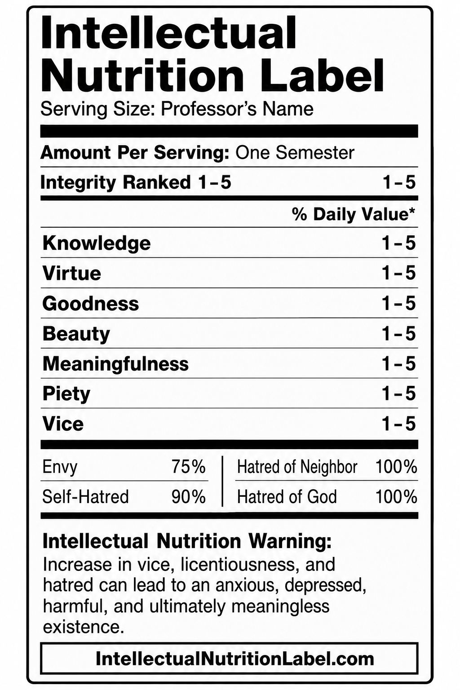

About
You will learn skills for evaluating the intellectual nutrition of professors and their classes.
Learn more →The Intellectual Nutrition Label helps parents and students evaluate professors and the ideas they teach using publicly available information—so families can make informed decisions before paying tuition. Is your college/university class intellectually healthy or does it promote anxiety, depression, and meaninglessness?
Get Started
Use these pages to gather information about the ways that radical ideologies are promoted in public university classes. Will that class be intellectually healthy for you? Or will it teach you vices like envy and bad habits like complaining?
You will learn skills for evaluating the intellectual nutrition of professors and their classes.
Learn more →Browse labels here and on Professor Anderson's Substack.
Browse labels →Questions and suggested classes for evaluation can be sent to Professor Owen Anderson at his Substack.
Contact us →